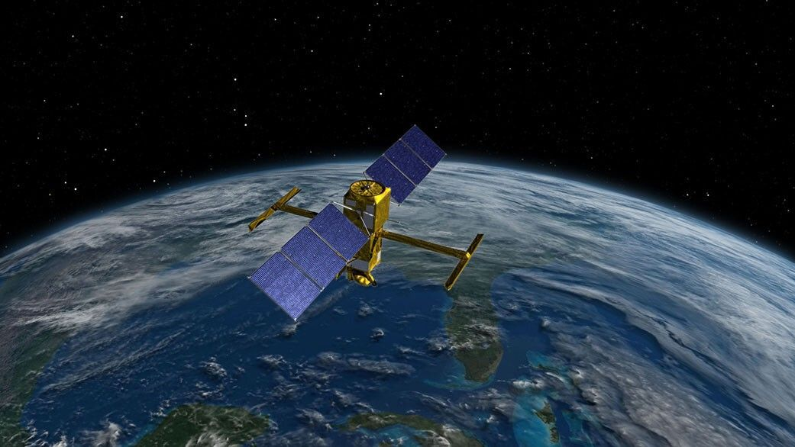

The Space Weather Operational Readiness Development (SWORD) Center of
Excellence

Focus: Satellites, orbital dynamics, and space debris SWORD is
dedicated to forecasting how space weather affects satellites, orbital
environments, and debris management, helping protect infrastructure in
Earth's orbit.